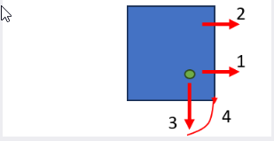

Offsets de trabajo
La máquina podría determinar el offset de trabajo de múltiples maneras.

Diodo de posición
La forma más común es mover el puntero láser verde a la posición deseada y pulsar el botón Establecer. La máquina lo utilizará como offset de trabajo.
Centro de boquilla
Esta opción puede resultar útil especialmente cuando la máquina ya ha posicionado la boquilla en el punto cero. La máquina utilizará el centro de la boquilla como offset de trabajo.
Manual
En operaciones especiales o si trabaja con dispositivos fijos, esta opción le permitirá ajustar manualmente el offset de trabajo.
Detección de bordes de 2 puntos
Esta opción es útil cuando necesitas establecer el offset de trabajo en el borde del material. La máquina le pedirá que mueva la boquilla hasta el primer punto y determinará automáticamente la esquina de la chapa. Esta función es rápida y está pensada para piezas pequeñas que se colocan en una esquina de la chapa.
| La precisión de la estrategia de 2 puntos está limitada por la precisión de la máquina y, por lo tanto, no debe utilizarse en una chapa completa que se vaya a cortar. |
La lógica funciona de la siguiente manera:

-
Seleccione con el láser una posición cercana a la posición cero deseada.
-
La máquina realiza una búsqueda de esquinas en dirección X desde la posición en la que comenzó.
-
La máquina realiza una búsqueda de esquinas en el centro más cercano entre dos listones de apoyo.Esto maximizará una medición precisa de las esquinas.
-
La máquina se desplaza hasta la esquina que ha encontrado y corta la pieza tras la confirmación.
Detección de bordes de 3 puntos
El método de 3 puntos es mucho más preciso y toma 3 puntos de medición en una chapa completa. Asume que tenemos una chapa completa (>1000x2000) sobre la mesa y realiza tres búsquedas de esquinas en x300, x1500 y y300 para encontrar el punto cero. Es el método preferido para cortar una chapa completa.

| Si la detección de bordes se realiza en un listón de apoyo, se obtendrán resultados inexactos. Por lo tanto, la máquina selecciona automáticamente una posición entre dos listones de apoyo. |
| Antes de aplicar la detección de bordes de tres puntos en la máquina láser, se debe especificar el tamaño de la chapa en el software Flux. Asegúrese de que el tamaño de la chapa especificado en el programa coincide con la chapa real cargada en la máquina. Asegúrese de que el diodo piloto está colocado en la esquina de la chapa |

Al seleccionar la opción Detección de bordes de 3 puntos en el menú de offset de trabajo, se llevará a cabo la siguiente operación:
-
En primer lugar, mueva el cabezal de corte al diodo piloto en la posición (0,0) del borde de la chapa.
-
El cabezal de corte se moverá a esta posición para encontrar el primer borde de la hoja.
-
Después de detectar el primer borde, el cabezal de corte se moverá a la segunda posición para encontrar el segundo borde de la chapa.
-
Después de detectar el segundo borde, el cabezal de corte encontrará el tercer borde de la chapa (para encontrar la pendiente de la chapa).
-
Tras la confirmación, la posición del cabezal se moverá automáticamente a la posición inicial y ejecutará el proceso de corte.